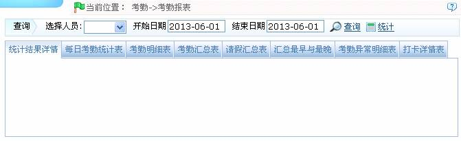
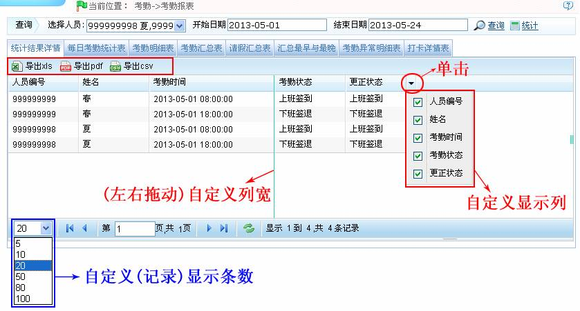
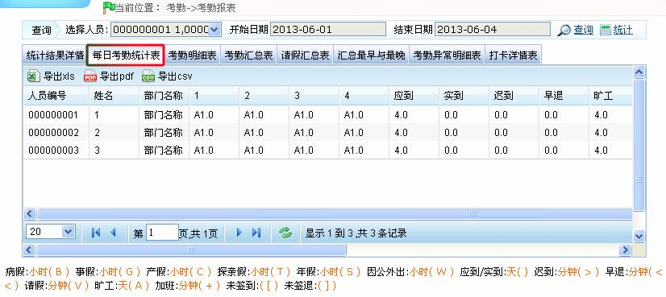
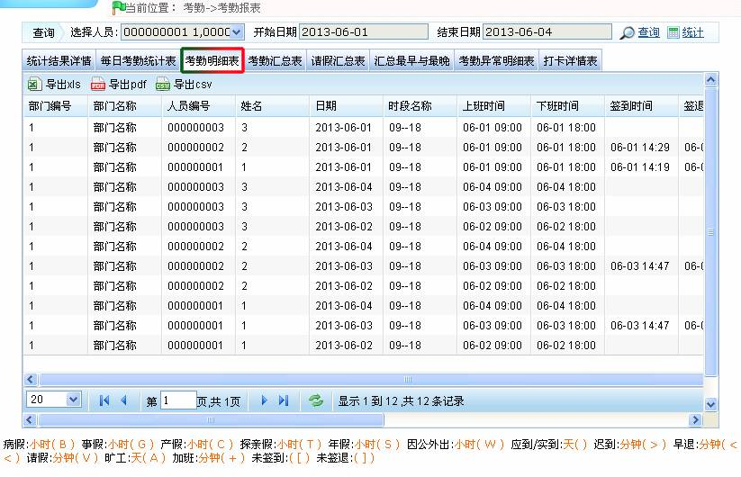
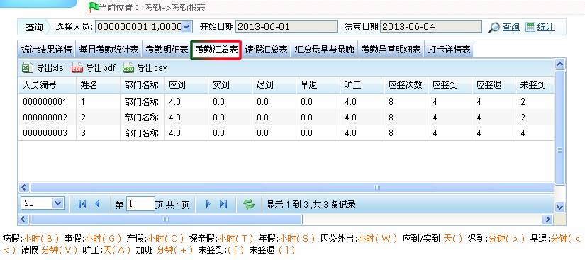
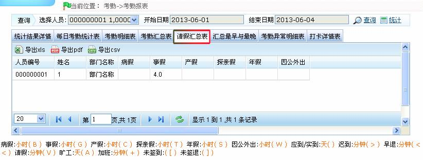
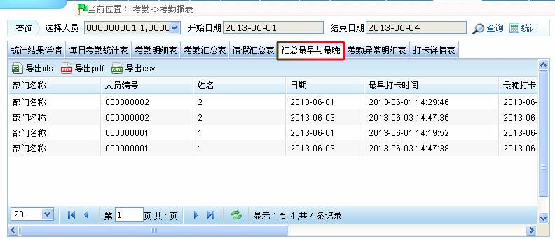
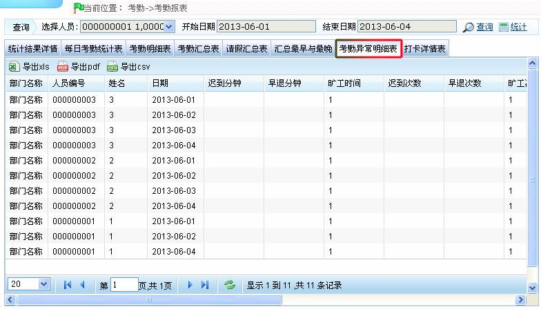
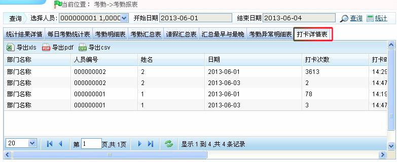

7.7 考勤计算与报表
7.7.1 考勤计算
-
 取卡规则
取卡规则
签到取应签到之前的最接近的原则，如9点上班，签到有8：55，9：01，则取8：55分为签到，签退取应签退之后的最接近的原则，如18：00下班，如有18：01，18：20的卡，则取18：01为签退时间；
-
计算流程
先判断每个人当天的班次，再判断每个人在当天的工作类型，再取卡，取请假列表；再取调休资料；取工作类型时候只取当前日期的前100天的节假日设置；取考勤参数；最后计算，并保存进数据库。
-
计算先决条件
日期≥入职日期，并且人员的“是否考勤”设置为“是”时才计算。如果不需要考勤，那在考勤计算中就不会出现该人员的任何考勤数据。
-
取整规则
分为向下取整、四舍五入和向上取整：
向下取整时，被计算的项目的值在求余后超出最小单位时，其多余的部分将被舍弃；
四舍五入时，被计算的项目的值在求余之后超出最小单位的一半时候，将会进位一个最小单位，如果小于最小单位的一半时，将会直接舍弃；
向上取整时，如果计算的项目的值在求余之后超出最小单位，将会进位一个最小单位。
7.7.2 考勤报表
考勤报表是将所查询人员在指定时期内的每日考勤状况在表中列出，并统计旷工、迟到/早退、加班、请假的时间，便于对应核查是否与实际情况有出入。如果查看结果不符，可以根据需要调整班次，添加补签卡、请假单或调休单，以及直接修改日报数据。
点击【考勤】 【考勤报表】，进入考勤报表页面：
【考勤报表】，进入考勤报表页面：

考勤报表的查看方法如下：
1、单击选择人员后的按钮，在弹出的人员选择框中选择需查看考勤报表信息的人员（可多选或全选），人员的选择，请参见附录1 常用操作中的1. 人员选择。
2、设置开始日期和结束日期。日期的设置方法，请参见附录1 常用操作中的2. 选择日期。
3、单击【查询】按钮，查看被选中的人员在设置的开始和结束日期内的考勤报表信息。
 备注：直接单击报表名称即可显示对应的报表信息。
备注：直接单击报表名称即可显示对应的报表信息。
-
统计结果详情表
此表统计的是有效的考勤记录
考勤状态为原始记录状态，更正状态是根据人员的排班时段和打卡时间，按照考勤计算规则判断人员是上班签到还是下班签退，统计时将以此状态进行统计。

（1）、用户可根据需要导出考勤报表，可导出为“xls”、“pdf”或“csv”格式的文件。导出报表的具体方法，请参见附录1 常用操作中的5. 导出。
（2）、用户根据需要选择考勤报表需显示的字段（打勾选中后，即显示）。
（3）、用户可根据需要（左右拖动）自定义列宽。
（4）、用户可根据需要自定义考勤报表每页的记录显示条数。
 注意：统计只能当月日期，或者天数不能超过开始日期的月份天数。
注意：统计只能当月日期，或者天数不能超过开始日期的月份天数。
各表中标识含义如下所示：
病假:分钟( B )事假:分钟( G )产假:分钟( C )探亲假:天( T )年假:天( S )应到/实到:天( )迟到:分钟( > )早退:分钟( < ) 请假:小时( V )旷工:天( A )加班:小时( + )未签到:( [ )未签退:( ] )自由加班:小时( F )。标识的增加与修改请参见7.1 考勤参数。
-
每日考勤统计表

该表显示在选定期间内，人员每日考勤状态、考勤统计、加班统计、请假及请假汇总等，并以符号或数字或符号加数字的形式显示在列表中。
-
考勤明细表

该表按日期显示所有人员的排班情况、出勤情况、加班、节假日统计等。考勤明细表是人员在每个考勤时段的考勤记录统计表。
应签到/应签退、无签到/无签退：1表示“是”，0表示“否”；
出勤时长：人员签到时间与签退时间的时间间隔；
例外情况：指的是人员除上下班之外的异常情况，如人员请假等事项；
工作分钟：时段的“工作时间(分钟)”中，实际已出勤的有效时长。
 注意：此表的旷工、出勤时长、工作分钟、时段时间的数据都是以分钟为单位显示，不以按照统计项目中变更的单位设置变化。
注意：此表的旷工、出勤时长、工作分钟、时段时间的数据都是以分钟为单位显示，不以按照统计项目中变更的单位设置变化。
-
考勤汇总表

列表显示每个人员在此期间内的考勤情况汇总，包括出勤、请假、加班等的明细表。即考勤明细表的汇总表。
请假记录按所属的假类归类计算。报表中“请假”列的数据=各个假类数据的总和，例如：请假=病假+事假+产假+探亲假+年假+自定义假类。
-
请假汇总表

报表汇总选择日期范围内，所有有效请假记录的有效时间、请假类型。有效时间（分钟）即该请假记录开始时间与结束时间的间隔分钟数。
-
汇总最早与最晚
统计考勤结果中每个人每天打卡数据中最早与最晚的打卡数据。

列表显示所有考勤异常明细情况。

-
打卡详情表
列表显示所选人员的打卡详细情况。
